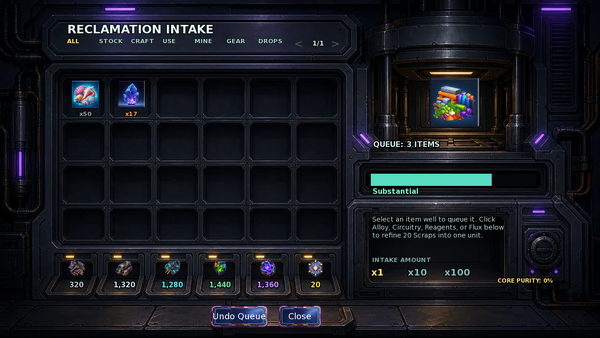

Player wiki noticeThis community-maintained page may contain gameplay, story, and mature-content spoilers.
概览
Orchid 将剩余库存转化为用于TD研究的永久材料,陆军装备贸易和装甲. 垦荒材料与在战斗中花费的Salvage/Ammo/Command分开.
解锁并使用摄入
完成 要收回的房间 然后开垦湾房间 第一个摄入 用于 使用回收摄入从行动中心找到它 打开入口 穿过堡垒需要0分钟

- 选择类别 : 所有,斯托克,CRAFT,使用,我的,GEAR,或DROPS。必要时使用页面箭头。
- 检查合格项目及其级别。 选择 ×1、×10或×100,然后单击项目以存入请求的数量,并以可用数量为限。
- 交存会立即将这些项目从原库存中删除, 并添加到队列中。 尚未转换 。
- 撤销队列 将整个未处理的队列在确认后返回到其原始目录。
- 关闭控制台并使用 Orchid 单独的 进程还原队列 动作。它需要非空的队列,费用 60分钟,并可供使用 每天一次.
- 处理会消耗队列,奖项材料,更新Core Purity,以及根据运算的分数获得Orchid关系分数.
使用控制台的合格项目列表而不是假设任何拥有都可以被回收。 密钥/ 特征特定项目通过目录规则受到保护; 怪物工具保留一份副本, 并且不包含分数挖掘进度 。 保留一个项目用于另一个目标仍然是将其排队的原因 。
职等和回返
每个排队的单位增加其等级的分数和回报. 专家单位是合金/循环/试剂/奢侈品的合并输出,而不是每件材料的这个数量.
| 职等 | 分数 | 块 | 预期专家单位 | 纯度点 | 单位核心机会 |
|---|---|---|---|---|---|
| 残留 | 1 | 1 | 0.0 | 0 | 0.0% |
| 常见 | 2 | 1 | 0.25 | 0 | 0.0% |
| 有用 | 4 | 2 | 0.5 | 0 | 0.0% |
| 稀有 | 8 | 4 | 1.25 | 1 | 0.05% |
| 图片 | 16 | 8 | 2.25 | 5 | 0.25% |
| 缩写 | 32 | 12 | 3.5 | 15 | 1.0% |
| 主作业 | 64 | 20 | 5.5 | 35 | 5.0% |
批量的预期专家单位合并起来,那么任何分量的剩余部分就会成为增加一个单元的机会。 产出在四种材料中随机分配,加权于目前库存较低的材料。
每个 100个核心纯度点 生产 一个保证纯核。未使用的纯度仍为下一批。幸运-核心概率组合在队列之间,最多可以授予 每批增加一个幸运核心它与有保证的Cores是分开的 活的幸运药能为幸运的卷子提供它的重试
队列积分和 Orchid 关系
| 队列分数 | 电流级 | 关系收益 |
|---|---|---|
| 1–9 | 光线排序 | +1 |
| 10–39 | 有用豪尔 | +3 |
| 40–99 | 实质性 | +6 |
| 100岁或以上 | 特别 | +10 |
分数测量整个批次,而不是其项数。例如,三个Exotic Crystals提供 96分数它们的核心纯度贡献是: 45点在任何现存的纯度或幸运度之前
精细拼写
点击控制台中的合金、电路、试剂或豪华值来花费 20支用于选定材料的一个单元这使得您可以直接瞄准缺失的专家材料。
处理时间 超过500块,Orchid自动改进 全部报废准备金。完整组保留了20:1的比例;剩余组为再一个专家单位提供了比例机会。产出使用正常加权材料分布。 整整500块没有触发 这自动改进。
重新平衡救护
首次入股后,Orchid 提供 重新平衡救护 当您拥有至少2个合金/循环/试剂/豪华组合单元时。 2至10个随机单位共计,以你拥有的为界,然后在四种材料中尽可能均衡地划分剩余合并库存。由于使用了整个单位,个人余额可能因一个而不同。
行动费用 0分钟没有关系奖赏 离开 碎屑和原始芯片不变。用它来纠正巨大的不平衡;它消耗部分池子,而不是产生更多的材料。
EPOM 物质转移器 是一种不同的服务:它兼顾普通材料、织物和成分 每个稀有层次它至少需要10个一级综合资源,收取2-10个随机编织单元加整数-分部剩余部分的费用,而且没有重新平衡四个TD专家材料。
消耗回收材料
- EPOM: 新建炮塔设计,炮塔研究,以及五军物品贸易.
- AIMy/Tinker: 共享的要塞控制/硬件轨迹。
- Orchid: 用于8个常规屏障设计的独立升级.
- Tinker: 给每个被征召的英雄 分别改进陆军装甲
Overview
Orchid turns surplus inventory into the permanent materials used for TD research, Army equipment trades, and armor. Reclamation materials are separate from the Salvage/Ammo/Command spent inside a battle.
Unlock and Use the Intake
Finish Room to Reclaim to open the Reclamation Bay room, then First Intake to use Use Reclamation Intake. Reach it from the Operations Center. Opening the intake and traveling through the fortress costs 0 minutes.
- Choose a category: ALL, STOCK, CRAFT, USE, MINE, GEAR, or DROPS. Use the page arrows if necessary.
- Inspect an eligible item and its grade. Select ×1, ×10, or ×100, then click the item to deposit the requested quantity, bounded by the available amount.
- Depositing immediately removes those items from their original inventory and adds them to the queue. They are not converted yet.
- Undo Queue returns the entire unprocessed queue to its original inventories after confirmation.
- Close the console and use Orchid's separate Process Reclamation Queue action. It requires a nonempty queue, costs 60 minutes, and is available once per day.
- Processing consumes the queue, awards materials, updates Core Purity, and awards Orchid relationship points according to the haul's score.
Use the console's eligible-item list rather than assuming any possession can be recycled. Key/character-specific items are protected through the catalogue rules; monster tools reserve one copy, and fractional mining progress is excluded. Keeping an item for another objective is still a reason to leave it out of the queue.
Grades and Returns
Each queued unit adds its grade's score and returns. Specialist units are the combined Alloy/Circuitry/Reagents/Flux output, not that amount of every material.
| Grade | Score | Scraps | Expected specialist units | Purity points | Lucky Core chance per unit |
|---|---|---|---|---|---|
| Residue | 1 | 1 | 0.0 | 0 | 0.0% |
| Common | 2 | 1 | 0.25 | 0 | 0.0% |
| Useful | 4 | 2 | 0.5 | 0 | 0.0% |
| Rare | 8 | 4 | 1.25 | 1 | 0.05% |
| Epic | 16 | 8 | 2.25 | 5 | 0.25% |
| Exotic | 32 | 12 | 3.5 | 15 | 1.0% |
| Masterwork | 64 | 20 | 5.5 | 35 | 5.0% |
The batch's expected specialist units are combined, then any fractional remainder becomes a chance for one extra unit. Output is distributed randomly among the four materials, weighted toward those currently in lower stock.
Every 100 Core Purity points produces one guaranteed Pristine Core. Unused purity remains for the next batch. Lucky-Core probability combines across the queue and can award at most one additional lucky Core per batch; it is separate from guaranteed Cores. An active Luck Potion can provide its retry for that lucky roll.
Queue Score and Orchid Relationship
| Queue score | Haul tier | Relationship gain |
|---|---|---|
| 1–9 | Light Sorting | +1 |
| 10–39 | Useful Haul | +3 |
| 40–99 | Substantial | +6 |
| 100 or more | Exceptional | +10 |
The score measures the whole batch, not its item count. For example, three Exotic Crystals provide 96 score, qualifying as Substantial. Their core-purity contribution is 45 points, before any existing purity or lucky roll.
Refine Scraps
Click Alloy, Circuitry, Reagents, or Flux in the console to spend 20 Scraps for one unit of the chosen material. This lets you target a missing specialist material directly.
When processing would leave more than 500 Scraps, Orchid automatically refines the entire resulting Scrap reserve, leaving zero Scraps. Full groups retain the 20:1 ratio; a remainder gives a proportional chance for one more specialist unit. The output uses the normal weighted material distribution. Exactly 500 Scraps does not trigger this automatic refinement.
Rebalance Salvage
After First Intake, Orchid offers Rebalance Salvage when you have at least 2 combined Alloy/Circuitry/Reagents/Flux units. It costs 2–10 random units total, bounded by what you own, then divides the remaining combined stock as evenly as possible among the four materials. Individual balances can differ by one because whole units are used.
The action costs 0 minutes, has no relationship-point reward, and leaves Scraps and Pristine Cores unchanged. Use it to correct a large imbalance; it consumes part of the pool rather than generating more materials.
EPOM's Matter Displacer is a different service: it balances ordinary materials, fabrics, and ingredients within each rarity tier. It requires at least 10 combined resources in a tier, charges 2–10 random crafting units plus integer-division leftovers, and does not rebalance the four TD specialist materials.
Spend Reclamation Materials
- EPOM: new turret designs, turret research, and five Army-item trades.
- AIMy / Tinker: the shared Fortress Control/Hardware tracks.
- Orchid: independent upgrades for eight regular barrier designs.
- Tinker: separate Army Armor improvements for each recruited hero.
Research beyond initial turret purchase also needs Army EXP. See Fortress Workshops for costs and Army and Training for equipment and armor.
Text adapted from the community-maintained Chronoromancer Wiki under CC BY-SA 4.0.